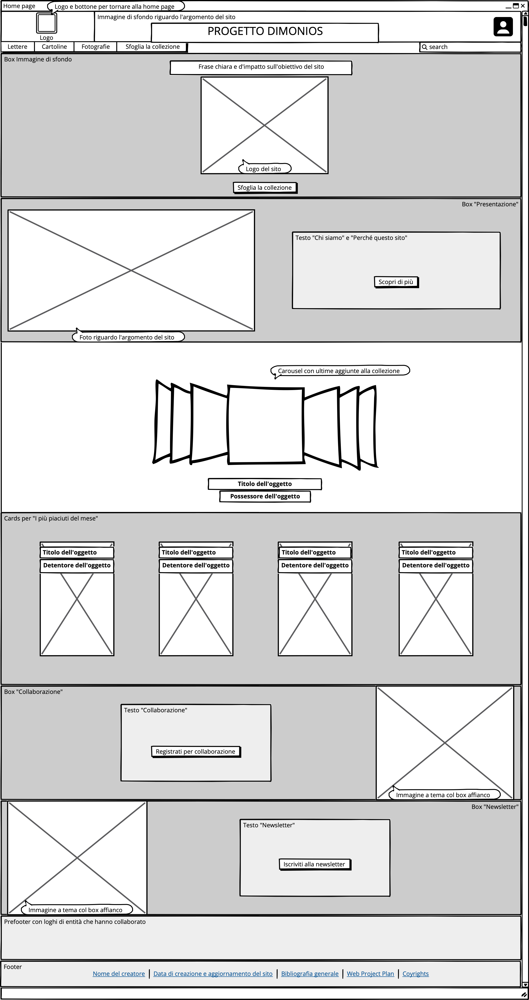
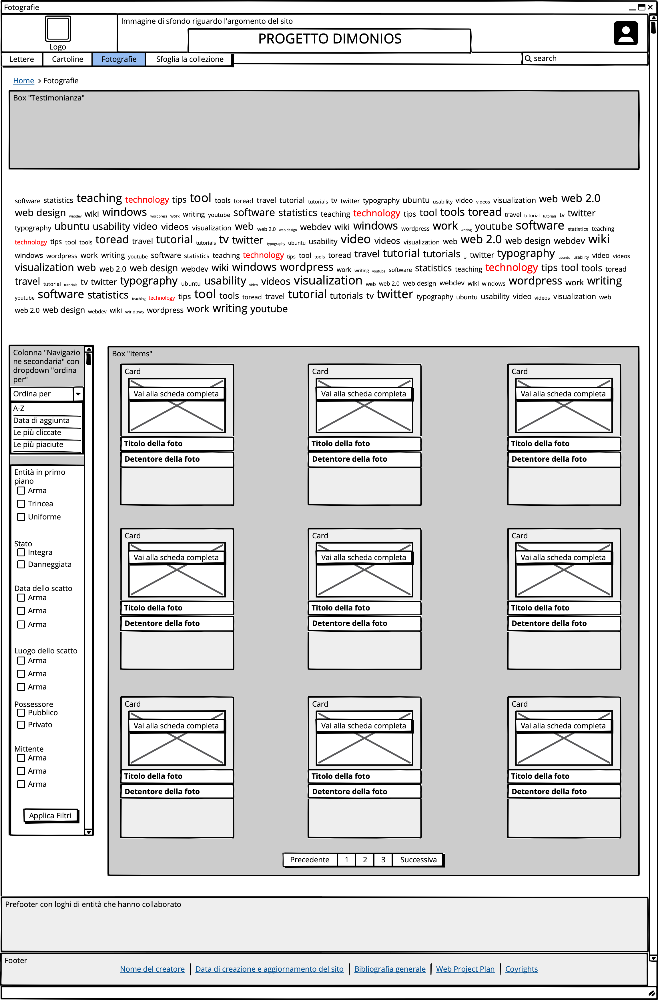
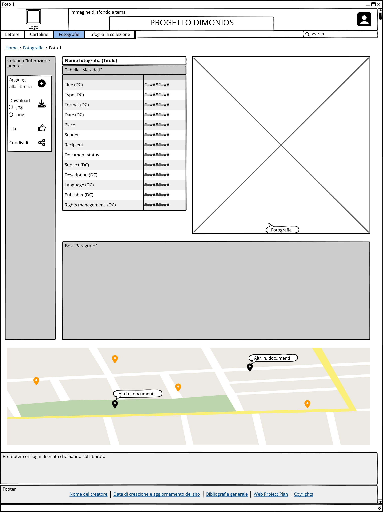

IDEA
Il sito web si chiama Progetto Dimonios. Dimonios (dal sardo logudorese; in italiano "diavoli") è l’appellativo con cui i soldati della Brigata Sassari da sempre si sono chiamati tra di loro e sono noti dai nemici. Esso sottolinea il loro senso di unità, nonché la loro bravura in combattimento. Il sito è una collezione di testi e immagini circa alcune battaglie della Prima Guerra Mondiale in cui la Brigata si è distinta per coraggio e tenacia. Attraverso vari strumenti di navigazione ed interazione (es. bottoni, faccette, word-cloud e mappe), è possibile consultare tutte le testimonianze analizzate nel dettaglio, scaricarle e condividerle con terzi senza alcuna limitazione. La fruizione dei contenuti non è condizionata da una registrazione al sito. Essa è necessaria solo per creare una libreria di testimonianze personale e per proporre nuovi oggetti al team di ricerca dietro il sito che potrebbero essere aggiunti alla collezione e resi disponibili alla comunità.
BRIEF
Finalità e obiettivi del progetto
Progetto Dimonios è una collezione di documenti ed immagini circa le battaglie più significative della Prima Guerra Mondiale a cui il 151° e il 152º reggimento di fanteria italiana (insieme chiamati Brigata Sassari) ha partecipato. In particolare, ci si concentrerà sulla battaglia del San Michele, sugli scontri avvenuti sull’Altopiano d’Asiago e sulla battaglia dei Tre Monti. L’idea nasce dalla necessità del fondatore Andrea Ruzzeddu di valorizzare una delle tante punte di diamante culturali del suo territorio di provenienza. L’obiettivo del sito è quello di mettere in luce la portata storica della Brigata Sassari. Dunque gli ambiti disciplinari qui esplorati sono l’arte, la storia e la letteratura.
Pubblico di riferimento
Il prodotto finale sarà proposto ad un pubblico mediamente informato sul tema e a tutti coloro che desiderano appassionarsi allo stesso. Si pensa di mostrare all’utente i contenuti (pubblicati dal team di ricerca) in ordine alfabetico. In ogni caso, verrà lasciata la possibilità di selezionare i contenuti più interessanti per ogni tipo di utente per mezzo di filtri.
Accesso alla risorsa
Il sito ospiterà immagini e testi (lettere, rapporti di ufficiali d’esercito, cartoline, fotografie ecc.). Considerato l’ampio bacino d’utenza che Progetto Dimonios vuole includere ma ritenendo che gli oggetti analizzati non sarebbero adatti ad una consultazione rapida, il sito non sarà ottimizzato per smartphone o tablet e si ritiene che andrà prediletto l’accesso tramite pc.
Modalità di raccolta dei contenuti e dei dati
I contenuti saranno reperiti da siti come Europeana ma anche da database istituzionali nei limiti imposti dalle norme sui diritti d’autore. Inoltre saranno accettati i dati di tutti coloro che desidereranno condividere con la comunità d’interesse le proprie testimonianze circa gli eventi considerati. Per il lancio del sito, il team di ricerca svilupperà una base di dati dalle raccolte sopra menzionate. Successivamente l’utente avrà la possibilità di inviare allo stesso team le proprie testimonianze (es. cartoline o foto di un proprio parente o di un’altra persona che ha partecipato alle battaglie prese in esame) dopo aver effettuato l’accesso al proprio profilo personale. Dopodiché lo stesso gruppo si rivolgerà a chi di competenza per stabilire l’attendibilità e la veridicità dei dati inviati. Infine, gli stessi saranno aggiunti alla collezione per essere fruibili da tutti gli utenti.
BENCHMARK
Idea
Ad oggi non c’è alcun sito che si occupi esclusivamente del macro-argomento in analisi. Ci sono raccolte di dati sulla Prima Guerra Mondiale, ma nessuno tratta l’argomento in maniera così mirata quanto proposto dal sito. Ci sono siti che si occupano della Brigata Sassari ma sono pochi e non esaustivi dal punto di vista dei contenuti. L’interfaccia utente di alcuni di questi non sembra efficace per la fruizione di contenuti poiché poco accattivante ed intuitiva.
Contenuti
International Encyclopedia of the First World War
- Contenuti;
- Modalità di navigazione degli stessi, organizzati dalle voci nella barra di navigazione principale (tema, luogo, articoli dalla a alla z ecc.);
Pinterest
- La possibilità di pubblicare immagini proprie e renderle visibili alla comunità;
- La possibilità di creare un profilo utente con una propria libreria per salvare le immagini preferite;
Archivio Storico Dal Molin
14-18 Documenti e immagini della Grande Guerra
Europeana
È un archivio che include testimonianze e studi recenti sulla Prima Guerra Mondiale. Da esso sono state prese delle suggestioni per:
Tuttavia, è chiaro che il sito si propone ad un pubblico specializzato. Perciò i non addetti ai lavori potrebbero rimanere disorientati davanti ad una tale mole di conoscenza: non è il luogo adatto per informarsi da zero sul tema. È apprezzata la possibilità di scaricare gli articoli, nonché l’estrema trasparenza circa le fonti usate dagli autori degli stessi. Infine, tutti i dati sono sotto licenza Creative Commons, estremamente utile per condividere e distribuire i dati a fini non commerciali. I colori usati dai vari elementi strutturali coincidono con quelli di Progetto Dimonios, differiscono per disposizione tra gli elementi e tonalità.
È un social media incentrato sulla pubblicazione di immagini. Da questo sono stati presi degli spunti per l’interazione con l’utente ovvero:
Nel caso di Progetto Dimonios, le risorse sarebbero salvate per scopi di ricerca o per una seconda consultazione della risorsa in maniera più veloce.
È un archivio progettato ed aggiornato da volontari italiani con l’obiettivo di mantenere alto l’interesse sulla Grande Guerra non solo attraverso questo prodotto digitale, ma anche con eventi come convegni e mostre. Tramite la navigazione laterale è possibile accedere alla sezione “reparti” in cui è presente un elemento-foglia sulla Brigata Sassari (utile a fini di ricerca per lo sviluppo del Progetto Dimonios). La grafica stimola l’esplorazione dei contenuti ma non è possibile riutilizzarli (come è scritto nella homepage) e molti di essi sembrano disponibili solo sotto richiesta. Ciò causa un freno alla sete di conoscenza di qualunque utente.
Il progetto è stato pensato come un grande strumento di ricerca per tutti i dati raccolti dal “Fondo guerra”. Successivamente, si è ampliato includendo nella sua raccolta i dati di diversi musei, archivi e biblioteche riguardo il tema, includendo anche contenuti utili per lo sviluppo di Progetto Dimonios. La barra di navigazione propone dei metodi di selezione del materiale interessanti e più adatti per i dati di Progetto Dimonios (rispetto a quelli proposti da International Encyclopedia of the First World War). Il sito è aperto a nuove collaborazioni ma non ne specifica il tipo. Notando i finanziatori e i patrocinii, si suppone che si riferisca a partnerships con altri musei ed entità statali. Dunque potrebbe non essere aperto all’interazione coi singoli utenti, punto-cardine invece di Progetto Dimonios.
È una collezione di dati (testi, immagini, modelli 3D e video). Permette di navigare nel patrimonio digitale europeo. Da essa sono stati presi alcuni dati per il sito del progetto. Inoltre, la collezione è stata d’ispirazione per la sezione “newsletter” e “collaborazione” (vedi wireframes) sia concettualmente sia graficamente.
STRUTTURA
Mappa concettuale
Per sviluppare la mappa concettuale circa l’idea del progetto, ci si è ispirati al modello E-R. Sono stati utilizzati dei rettangoli per le entità, dei rombi per le relazioni, e delle ellissi per gli attributi. Alcuni di questi ultimi sono collegati sia a entità sia a relazioni (es. alcune azioni d’interazione sito-utente sono pensate come possibili sia per un individuo registrato alla collezione sia per un utente sconosciuto).
La mappa dovrebbe essere percorribile in più sensi e il sito dovrebbe permettere lo stesso: la pagina di catalogo degli items dovrebbe essere visualizzabile sia a partire dalle categorie Dublin Core sia cliccando la voce opportuna nella homepage (es. un luogo citato nel testo dell’item o in una categoria, dovrebbe essere un link che porterebbe ad una pagina in cui sono mostrati tutti gli altri items che citano quello stesso luogo; dalla homepage si dovrebbe accedere alla stessa pagina e inserire il filtro di luogo).
Ci sono due tipi di rettangoli indicanti i collegamenti a risorse correlate: quelli che specificano se la risorsa sarà interna o esterna indicano entrambe le possibilità; gli altri considerano solo la scelta di una risorsa esterna alla collezione per motivi di concetto (è chiaro che se il detentore di una testimonianza è un museo, un archivio o altre istituzioni culturali aperte al pubblico, un collegamento ai loro siti sarà più esaustivo di un paragrafo necessariamente breve implentato in Progetto Dimonios). Entrambi i collegamenti saranno attivati tramite link su porzioni di testo.
Schema delle dipendenze
La homepage permette di accedere (tramite una barra di navigazione) alle tre categorie di testimonianze prese in considerazione da Progetto Dimonios. Inoltre è presente una barra di ricerca (funzionante tramite processo di lemmatizzazione dei testi e categorie Dublin Core attraverso le quali saranno classificati gli items) e una voce per sfogliare il catalogo in maniera totalmente libera. Sono previsti alcuni filtri (o faccette) utili per la navigazione secondaria: luogo di ricezione o spedizione, lingua, entità in primo piano (valido solo per le fotografie) e mittente o destinatario. Sono previsti dei paragrafi o delle pagine di approfondimento per tutti i filtri sopra menzionati, ma potrebbero esserci delle mancanze circa l’ultimo quando l’una o l’altra persona siano anonime o nascoste per mancato consenso al trattamento dei dati interessati dal detentore della testimonianza. Dopo l’ulteriore affinamento di ricerca (se necessario), si può accedere alla pagina della testimonianza, analizzata secondo le categorie Dublin Core e altre aggiuntive menzionate nel punto successivo. Inoltre, sarà possibile risalire ai paragrafi o alle pagine di approfondimento pensate tramite links dalla pagina di ogni item.
Categorie di un possibile item:
- Title (DC):
- titolo presente nell’item oppure prima riga di testo;
- Type (DC):
- fotografia;
- documento;
- cartolina;
- Format (DC):
- dimensioni del foglio;
- Date (DC):
- data di spedizione;
- data di ricezione;
- Place:
- luogo di spedizione;
- luogo di ricezione;
- Sender:
- nome;
- vivo/deceduto;
- Recipient:
- nome;
- vivo/deceduto;
- Document status:
- integro;
- danneggiato;
- Subject (DC) (sono alcuni esempi, le voci aumenteranno quando la collezione diventerà più vasta):
- arma;
- cerimonia;
- cimitero;
- ferito;
- fronte;
- fucile;
- soldato;
- trasporto;
- trincea;
- ufficiale;
- uniforme;
- Description (DC):
- descrizione dell’item;
- Language (DC):
- italiano;
- dialetto;
- Publisher (DC):
- nome dell’entità pubblica;
- nome del privato;
- Rights management (DC):
- gestione dei diritti;
LAYOUT
Homepage
Partendo dall’alto, nell’intestazione è presente:
- il logo di Progetto Dimonios (che nelle pagine gerarchicamente inferiori permetterà di fare ritorno alla homepage);
- un’immagine di sfondo;
- un’icona per accedere alla propria libreria tramite credenziali personali;
Dopo l’intestazione, è presente una navbar con cinque voci:
- “Documenti”;
- “Cartoline”;
- “Fotografie”;
- “Sfoglia la collezione”;
- una barra di ricerca che condurrà l’utente ad alcuni items associati alla parola digitata (saranno necessari i metadati di tutti gli items e un processo di lemmatizzazione del testo di documenti e cartoline affinché essa sia funzionante);
Al di sotto, è stata posta una box con logo, immagine hero di sfondo ed una frase accattivante che faccia intuire subito l’utilità di Progetto Dimonios. Inoltre è presente un bottone “Sfoglia la collezione” che fa accedere l’utente al catalogo generale degli items non appena entra nel sito.
Più in basso, la box “Presentazione” permette all’utente di sapere di più sulla realtà dietro Progetto Dimonios. Attraverso il bottone “Scopri di più”, l’utente raggiungerà una pagina di approfondimento su:
- Team di ricerca di Progetto Dimonios;
- Idea di base da cui è partito lo sviluppo della collezione;
Lo stesso bottone ha sopra di sé un breve paragrafo con qualche frase che anticipa quanto sarà scritto nella pagina dedicata; il tutto è affiancato da un’immagine.
Uno sguardo d’impatto sugli items è stato realizzato tramite carousel e cards in due apposite boxes. La prima mostra quelli aggiunti di recente, la seconda pone in evidenza i più piaciuti del mese.
Le due boxes “Collaborazione” e “Newsletter” sopra menzionate sono affiancate da un’immagine a tema a testa.
È stato inserito un prefooter per accogliere i loghi di eventuali entità che vorranno collaborare per arricchire la collezione.
Infine, è presente un footer con links che rimanderanno a pagine di approfondimento circa:
- Il creatore del sito (ovvero la sua biografia);
- La cronologia di aggiornamento del sito (la data dell’ultimo aggiornamento è il link che collega alla pagina dedicata);
- La bibliografia generale;
- Il Web Project Plan;
- I diritti d’autore;
L’intestazione, il prefooter ed il footer non cambieranno nelle pagine gerarchicamente inferiori. Anche la navbar sarà sempre presente ma la voce selezionata per la navigazione subirà un cambiamento di stato.
Fotografie
È stato sviluppato il layout della pagina “fotografie” per mostrare come si intende sviluppare le pagine di raccolta degli items per macro-categorie (segnalate nella navigazione principale), nonché le navigazioni secondarie specifiche.
Sono presenti le breadcrumbs per far capire all’utente dove si trova nel sito e che percorso ha compiuto per arrivare alla pagina visualizzata.
Sotto è presente una box che descrive il tipo di testimonianza selezionato considerando il periodo di cui Progetto Dimonios si occupa (es. La foto era un oggetto diffuso? Che ruolo aveva a quel tempo? Ecc.).
La navigazione secondaria è stata incastonata in una colonna a sinistra. Un dropdown permetterà di ordinare gli items per:
- Lettera A-Z;
- Data di aggiunta;
- Numero di visualizzazioni;
- Numero di likes;
Tramite un gruppo di input, saranno mostrati gli items più pertinenti per l’utente e ne saranno rimossi di altri: l’utente può compilare la box nella colonna di sinistra che contiene varie voci che descrivono gli items e cliccare il bottone “Applica filtri” per visualizzare degli items che corrispondono ai filtri selezionati (per esempio, se l’utente volesse visualizzare solo items che riguardano dei soldati, gli basterà selezionare “Soldato”, cliccare il bottone e la pagina mostrerà gli oggetti desiderati).
Tra il paragrafo introduttivo circa il tipo di testimonianza e la box contenente i vari items, è prevista una word-cloud che cambierà le parole al suo interno ad un click del mouse su un item cosicché l’utente possa avere un’idea di che cosa troverà dentro l’elemento-foglia che vuole cliccare e potrà individuare delle parole-chiave in comune con altri items. Dopodiché, potrà digitare la parola-chiave che gli interessa nella barra di ricerca per isolare gli items desiderati.
Si potranno visualizzare le pagine dedicate agli elementi-foglia passando col mouse sopra la card di un elemento: apparirà il bottone “Vai alla scheda completa” che porterà alla pagina desiderata. Infine, sarà possibile vedere tutti gli items della ricerca in più pagine tramite un pagination.
Elemento-foglia
Escludendo gli elementi che si ripetono nelle pagine già descritte, "elemento-foglia" è divisa in due colonne. In quella di sinistra è presente una box con varie opzioni di interazione sito-utente:
- Aggiungere l’item alla libreria personale;
- Download dell’item in vari formati (.jpg, .png o .pdf; quest’ultimo per scaricare una scheda di analisi con la tabella dei metadati e la relativa immagine o il testo dei documenti);
- Aggiungere “mi piace”;
- Condividere l’item attraverso svariate piattaforme;
Nella colonna di destra; titolo dell’item e relativi metadati (disposti in una tabella) sono posti a fianco all’immagine dello stesso. Sotto di essi è presente una box di approfondimento con un’analisi dell’item (nel caso di una lettera, sarà presente anche la trascrizione dell’originale cosicché la lettura sia facilitata).
Prima del prefooter, è prevista una mappa dell’Italia con markers (navigazione contestuale) per:
- Mostrare il luogo di spedizione e di ricezione dell’item, nonché la quantità di items legati a ciascun luogo;
- Mostrare eventuali località non associate all’item analizzato ma comunque rilevanti in base ad una comunanza di metadati o altri lemmi;
USABILITÀ
Architettura
Per lo sviluppo, sono state seguite le dieci regole di usabilità di Nielsen (in particolare, la n. 1, 2, 3, 4, 6, 7, 8, 10). Seguendo i consigli sopra citati, gli elementi di riconoscimento (intestazione) e gli strumenti di navigazione principale (navbar) sono stati posti in alto e sotto il logo affinché l’utente abbia subito un’idea di quello che troverà nel sito. Cliccando sui bottoni della navbar, potrà raggiungere la categoria di items selezionata velocemente. Inoltre, il logo di Progetto Dimonios nella stessa sezione permette di fare ritorno alla homepage da qualunque pagina gerarchicamente inferiore.
Si è scelto di porre le informazioni riguardanti il creatore, gli aggiornamenti del sito, la bibliografia, il web project plan e i diritti d’autore nel footer a piè di pagina perché ritenute informazioni interessanti solo per utenti “esperti” e interessati ad utilizzare Progetto Dimonios per scopi di ricerca.
I punti salienti della homepage sono le boxes “Collaborazione” e “Newsletter” su cui poggiano le fondamenta dell’idea del sito perché richiedono subito un contatto con l’utente. Tuttavia, per preservare un certo grado accademico e non tendere maggiormente verso una struttura da social media, le stesse sono state poste sotto due carrellate di items della collezione che mostrano gli stessi in ordine di aggiunta alla collezione e per quantità di “mi piace” (quest’ultimo dato non sarà visibile all’utente poiché si tenderebbe eccessivamente verso il concetto di social network. Sarà un indicatore per posizionare gli items nelle cards della homepage che saranno aggiornate ogni mese grazie ad esso). Si ritiene che queste due panoramiche per una visione impressionistica siano utili tanto per utenti vagamente interessati al tema del sito quanto per quelli con un grado maggiore di conoscenza circa la materia trattata (aggiornare le proprie conoscenze è sempre importante!). I contenuti di Progetto Dimonios sono consultabili anche senza registrazione, dunque anche da utenti sconosciuti al sito.
La struttura delle pagine raggiungibili tramite la navbar sarà la stessa per tutte le voci; quel che cambierà saranno le voci della navigazione secondaria, ovvero ne saranno inserite alcune più adatte per la categoria di items selezionata e ne saranno rimosse di altre. Tutte saranno incluse nella pagina “Sfoglia la collezione” ed in quella dei risultati dopo aver utilizzato la barra di ricerca.
La navigazione secondaria è stata inclusa in una stretta colonna a sinistra degli oggetti principali cui la pagina è dedicata. Tramite bottoni o liste di checkboxes è possibile scegliere una voce specifica o compiere un’azione sull’oggetto. Perciò il catalogo o un singolo item è messo sempre a destra in una box decisamente più grande della colonna già menzionata. Inoltre, essa non cambierà mai posizione nelle pagine. Per quanto riguarda il bottone-dropdown e la lista di checkboxes nella pagina di catalogo, essi saranno sempre visibili dall’utente anche se utilizzerà la scroll bar (in quanto codificati come sticky; ovvero seguiranno l’utente durante lo scorrimento degli items cosicché le due componenti possano essere sempre a sua disposizione senza dover tornare in alto nella pagina).
Inoltre, è stato inserito un pagination per scorrere tra i vari items (posizionato sempre prima del prefooter). Ciò porta a preferire una fruizione del sito tramite piattaforme desktop come un pc e sfavorisce l’interazione da dispositivi mobili. Si è preferito perdere una fetta di utenza più giovane per presentare meglio gli oggetti proposti e per organizzare un’interfaccia più efficace per la consultazione (che sia a scopi di ricerca o di semplice interessamento). Ma il punto a favore dell’elemento è che lo scorrimento nella pagina è limitato per nove items. Ciò porta a vedere gli stessi meno “schiacciati” dalla word-cloud che risulta ingombrante nello schermo nonostante sia un elemento utile per navigazione e confronto tra items. Si ritiene di aver raggiunto un buon compromesso tra numero di pagine e scorrimento.
Negli elementi-foglia è stata posta una mappa con markers e popups per creare una navigazione contestuale interattiva. Si ritiene che questa variante creativa nella navigazione sia utile per entrambi i tipi di utente designati perché permette di approfondire l’item consultato anche da un punto di vista geografico.
Aspetto, tipografia
Sono stati considerati alcuni accorgimenti circa l’aspetto:
- I colori scelti sono il rosso (con varie gradazioni per cambi di stato, navbar e bottoni), il grigio (come colore di sfondo) ed il nero (per i titoli e le porzioni di testo). Il bianco è usato solo come colore di sfondo per la barra di navigazione principale, per alcune boxes e per i links. La scelta di tali colori non è casuale: richiamano quelli della bandiera sarda (escluso il grigio);
- È stato scelto Manrope come font da Google Fonts;
- Per i paragrafi di analisi dell’item e per la trascrizione del testo dei documenti è stato aumentato l’interlinea per facilitare la leggibilità;
- Non è stato giustificato il testo;
Nell'intestazione (uguale in tutte le pagine) è presente un'icona che permette di accedere alla libreria personale.
La navbar è sticky in qualunque pagina del sito.
Tutti i bottoni, in qualunque pagina essi siano, cambiano di stato al passaggio sopra di essi (il cambiamento di stato diventa permanente nella pagina caricata in seguito al click sul bottone scelto cosicché l’utente abbia chiaro il percorso appena svolto nel sito). Inoltre l’immagine del logo del sito nell’intestazione è un bottone che riporta alla homepage da qualunque pagina sia consultata.
Nella homepage sono stati usati un carousel e delle cards per aumentare l’interazione con l’utente, l’efficacia comunicativa e di conseguenza per invogliare l’utente a continuare la navigazione. Le cards cambiano di stato al passaggio sopra di esse: si sovrappone un colore grigio chiaro all’immagine dell’item ed inoltre appare il titolo dello stesso.
Nelle pagine gerarchicamente inferiori rispetto alla homepage:
- sono presenti le breadcrumbs: tutti gli step fatti nel percorso di ricerca sono links che permettono all’utente di tornare in una delle pagine precedentemente visualizzate;
- la navigazione secondaria è sticky ed è strutturata su base gerarchica. Dei titoli definiscono delle categorie di faccette (es. data, luogo ecc.); l’utente può selezionare delle sottovoci da ognuna e cliccare sul bottone “Applica filtri”;
- sono presenti le icone "aggiungi alla libreria", "like" e "download" nella box posta in una stretta colonna a sinistra delle informazioni dell'item (analizzato nella sua pagina dedicata);
- la mappa, usata come navigazione contestuale nelle pagine degli elementi-foglia, mostra due markers di colore rosso scuro per evidenziare luogo di spedizione e ricezione dell’item descritto. Sopra gli stessi, un popup mostra il numero di oggetti presenti nella collezione che includono nei loro metadati la stessa località. Tutti i popups sono cliccabili e porterebbero ad una pagina coi risultati di una ricerca per luogo;
SERVIZI
Strumenti di browsing
- Breadcrumbs;
- Search bar nella navbar;
- Pagination nella pagina "Fotografie";
- Word-cloud nella pagina “Fotografie”;
- Mappa nella pagina di approfondimento su un item;
- Faccette nella pagina di approfondimento su un item;
Inoltre gli items presenti nel carousel e nelle cards sono degli strumenti di browsing perché cliccando su di essi si salta la pagina di catalogo intermedia e si arriva direttamente alla loro pagina di approfondimento.
Strumenti di interazione
- Bottoni su/per:
- icona per accesso utente;
- download;
- ricerca;
- condividi;
- “mi piace”;
- navbar toggler;
- Immagini:
- hero image;
- card;
- carousel;
- responsive images;
- favicon;
- Menu (box a sinistra del contenuto principale nella pagina “Fotografie” e di approfondimento su un item):
- bottone dropdown;
- opzioni radio (forms);
- lista checkboxes (forms);
- Pagination (solo nella pagina “Fotografie”);
- Word-cloud (solo nella pagina “Fotografie”);
- Mappa "Leaflet" (solo nella pagina di approfondimento su un item)
- Markers;
- Popups;
Strumenti aggiuntivi per l’analisi e l'interazione
Nel sito web sono stati implementati tre strumenti aggiuntivi volti all'analisi dei contenuti e del sito web e per aumentare l’interazione con l’utente:
- "Voyant Tools": la word-cloud che offre questo strumento di analisi del testo è stata posta nella pagina “fotografie”. Essa offre una visione d’insieme circa le parole che compaiono maggiormente nei testi e nelle categorie descrittive degli items;
- "Leaflet": tramite esso, è stata generata una mappa per la pagina d’esempio circa l’approfondimento su un item. I markers posti su di essa mostrano il luogo di spedizione e ricezione dell’oggetto. Inoltre il popup, visibile una volta cliccato un marker, permette di constatare quanti altri items menzionano quel luogo nei loro metadati, nonché di cliccare sul link posto sul numero degli stessi per arrivare ad una pagina di catalogo col filtro di luogo selezionato;
- "Google Analytics": i suoi reports sono utili per capire che tipo di utente entra in Progetto Dimonios. Avere questi dati è utile per effettuare eventuali modifiche che aumentino la facilità di navigazione del sito e di ricerca degli items;
Migliorie future
Considerato che il sito è una demo allo stato attuale, molte sono le possibilità di ampliamento e miglioramento. Nella word-cloud si potrebbe aggiungere una sezione di hashtag: in maniera del tutto aleatoria, potrebbe apparire una finestra modale per chiedere all’utente che ha appena visualizzato un item come definirebbe lo stesso con una sola parola. La sezione che includerebbe questo metodo di browsing sarebbe più piccola e posta sotto la word-cloud. I neo-hashtags non sarebbero inclusi nei metadati e lemmi considerati dalla barra di ricerca. Sarebbero uno strumenti del tutto impressionistici, ma potrebbero aiutare l’utente a farsi un’ulteriore idea preliminare prima di cliccare sull’item e renderebbero il rapporto sito-utente ancora più stretto. Tuttavia, per capire l’utilità di una tale miglioria in rapporto al tipo di utente che frequenta Progetto Dimonios, si utilizzeranno i reports di "Google Analytics" (già implementato nel sito).
Sarebbe interessante ampliare le funzionalità della mappa sopra descritta per proporre una navigazione contestuale ancora più efficace. Si potrebbe includere uno zoom sulla Sardegna per vedere meglio le località evidenziate. Purtroppo, la mappa dell’Italia deve aumentare la scala di equivalenza per includere i tre markers. Allo stesso tempo, una mappa di tutti i paesi sardi in qualche modo nominati dagli items sarebbe un catalizzatore nello sviluppo della visione “geografica” degli oggetti. Ciò sarebbe possibile utilizzando, ancora una volta, "Leaflet".
Dopo aver raggiunto un vasto numero di items, si potrebbe aggiungere una pagina di pura statistica con grafici circa la maggiore o minore ricorrenza di alcune parole negli items della collezione. Si otterrebbe un ulteriore livello di analisi mediante istogrammi o diagrammi a torta. Una suite per l’analisi di testi come T-lab potrebbe crearli, e i dati sarebbero consultabili dall’utente una volta scaricati.
Inoltre, per mantenere alto l’interesse sulla collezione, si potrebbe automatizzare l’invio delle emails sugli ultimi items aggiunti (riferendosi alla box “newsletter”) utilizzando un servizio di email marketing come Mailchimp.
BIBLIOGRAFIA E SITOGRAFIA
Web Project Plan
- Lezioni e slides del corso di Informatica Umanistica di F. Tomasi a.a. 2023-2024;
- F. Tomasi, Metodologie informatiche e discipline umanistiche, Carocci, Roma 2008;
- Francesca Tomasi, Organizzare la conoscenza: Digital Humanities e Web semantico. Un percorso tra archivi, biblioteche e musei, Milano, Editrice Bibliografica, 2022;
- "10 Usability Heuristics for User Interface Design", Jakob Nielsen, 2020 (accorgimenti sull’usabilità);
Codice
- Lezioni e slides del corso di Informatica Umanistica di F. Tomasi a.a. 2023-2024;
- Lezioni e slides del laboratorio del corso di Informatica Umanistica a cura di M. Dello Buono a.a. 2023-2024;
- W3SCHOOL;
Contenuti e varie ispirazioni per stile, colori e servizi di browsing
- International Encyclopedia of the First World War;
- Pinterest;
- Archivio Storico dal Molin;
- Europeana;
- Soldati fotografi: fotografie della grande guerra sulle pagine di “Le Miroir” (pg. 1-28);
- Free-CSS (templates per ispirazione);
- Google Fonts;
Immagini
- Europeana;
- 14-18: documenti ed immagini della grande guerra;
- Internet Culturale: cataloghi e collezioni digitali delle biblioteche Italiane;
- Istituto per la storia del Risorgimento italiano;
- Wikimedia Commons;
- Freepik;
Strumenti
Tools
- Bootstrap;
- Mappa tramite Leaflet;
- Word-cloud tramite Voyant Tools;
- Sharethis per il bottone “Condividi”;